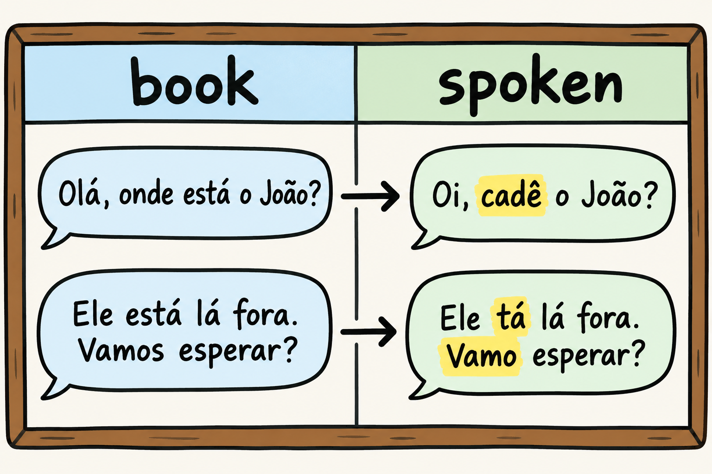

Most of the Portuguese you have met so far arrives on the page. The Portuguese you will meet in Brazil arrives at speaking speed: verbs shortened, pronouns shrunk, objects left out, and small words doing the work that whole clauses do in English. A learner who can read a paragraph can still lose the thread of a short exchange at a bakery counter.
The objective of this chapter is to decode everyday spoken Brazilian Portuguese and to give you a safe informal register of your own. The difficulty for you as an English speaker is specific: reduced forms like tô, tá and pra, the pronoun a gente, the short form cê, object ele where the grammar book shows o and a, initial proclisis, and the discourse markers that keep a conversation moving. Book grammar does not show you any of it, and all of it is normal use.
A habit matters more than the lists. Treat the informal register as the thing to learn rather than as mistakes to repair: it is documented as the ordinary register of Brazilian speech [F77]. This book offers transcription only, so the work below is written for reading and for writing practice. The open materials named at the end of the chapter are the author's suggestion for where to keep going.
The informal register is documented with a gente vai, reduced forms, initial proclisis and a set of discourse markers [F77]. This section is the decoder for those pieces. The forms come from that description; the sentences and the respellings are the author's illustrations.
Grammar books give you the full forms. Conversation keeps the meaning and drops the syllables. These are the reductions to recognize first, since they are the ones that make speech feel like another language:
Author's illustrations in sentences:
None of these is a mistake to repair. As the author's suggestion, learn to understand the reduced forms immediately and to produce them in speech, while keeping the full forms for anything you write. Learn each pair as a single item, so that the book form and the spoken form arrive together.
Another group does a different job. The markers aí, então, tipo, sei lá and olha belong to the same informal register [F77]. They are small words, and course dialogues usually leave them out, which is one reason a real conversation feels faster than the one in your book.
As the author's suggestion, treat these as listening anchors. When one appears, you have found the place where the speaker signals a next step, a reason, an example or a turn of attention. Author's illustrations:
Now the sentence skeleton. A gente is replacing nós [F67] and competes with it in complement functions [F66]. Treat a gente as a single block that carries the verb in the third-person singular shape. Author's illustrations: A gente chega cedo. for "We arrive early.", and Nós chegamos cedo. as the more conservative option.
Object pronouns move to the front. Initial proclisis is common in Brazilian Portuguese speech [F65], meaning the object pronoun can stand before the verb at the start of a sentence. Author's illustration: Me empresta dez reais? for "Can you lend me ten reais?", with me before the verb. That is the order to expect when you listen, and the order to use when you want to sound like the people around you.
The object pronoun itself is in motion. According to the abstract of a study based on a written corpus, the clitic o and a is in disuse in speech and persists in writing, with ele and ela or the null object in its place [F64]. The source is a written-corpus study, so read that point as a pointer to what you will hear rather than as a measurement of speech. Author's illustrations: Eu vi ele. for "I saw him.", with ele in the object slot where the grammar book writes o, and Vi ontem. for "I saw him yesterday.", with the object left out entirely.

Spoken Brazilian Portuguese does not only shorten words. It also chooses its pronouns in a way the grammar book does not predict, and studies of spontaneous speech show the pattern. The figures below are copied from those sources; no other figures are claimed in this chapter.
In the corpus studied, cê(s) accounts for 77% of the occurrences of cê, ocê and você, and for 85% of the preverbal occurrences [F79], that is, of the cases where the pronoun stands before the verb. In that corpus, você(s) answered for 78.1% of the treatment pronouns, with the qualitative observation that foreigners overuse o senhor [F78].
The reading for you is the author's suggestion. Expect cê in front of the verb in fast speech, and expect você in careful speech, in messages and in writing. Do not reach for o senhor in order to sound polite with a peer, since that habit is exactly what the qualitative observation above records for foreigners [F78].
A single word deserves its own line. Né is described as an interactional marker [F80]. It looks like a question, it is built from não é, and in conversation it does interactional work instead of asking for information. As the author's suggestion, hear né as the speaker checking that you are with them or inviting a nod, not as a real yes-or-no question.
Author's illustrations: É caro, né? for "It is expensive, right?" and Fica aqui, né? for "It stays here, right?". In both, the message sits in the nod as much as in the words, and neither expects a full answer.
Here is the hook that makes this chapter easy to remember. Spoken Portuguese uses tipo in many of the places where spoken English uses like. Tipo is documented as a marker of the informal register [F77], and the comparison with English is the author's suggestion: it points at a rough amount, at an example, or at a pause while the speaker searches for the word.
Author's illustrations: Ele quer tipo dois ingressos. for "He wants like two tickets.", and Foi tipo uma surpresa. for "It was like a surprise."
English has a single word for the person you are talking to. Portuguese offers several in everyday Brazilian speech: você, o senhor, tu and cê. The mapping below is the author's contrastive suggestion, not a rule from the sources in this chapter. It exists because the gap between a single English word and several Portuguese choices is where English speakers make their most visible social mistakes.
Both habits below are the author's suggestion. Choose a single form per conversation instead of mixing them, and mirror the person in front of you whenever you can. If you are unsure, você is the safer everyday option, since it is the treatment pronoun that dominates in the corpus described above [F78].
Decoding is only half the work. The other half is moving between the registers on purpose, so that both become yours. The routine below is the author's suggestion, and it is built on open materials: COERLL at the University of Texas at Austin offers open Portuguese materials under a Creative Commons license [F88]. The same source records that Brazilpod is retired [F88], so do not build your week around it.
Once a week, take a short dialogue with its transcript from those materials and run it through the pass described here. Keep the exercise on paper, since this book offers transcription only.
The worked example below is the author's illustration, written for this exercise.
Spoken version:
Book version:
The book version keeps the full forms and the safer address. The spoken version is not broken Portuguese: it is the register documented in [F77]. As the author's suggestion, keep both versions of each dialogue as a single review item, so that you can produce either register on demand. That movement between registers is the point of this chapter.
Spend most of your time on the decoder: the reduced forms and the markers. They are what make speech hard to follow at first, and they are cheap to learn because there are not many of them. Next, learn the pronoun picture, cê and você first, o senhor for respect, tu where the region uses it. Last, practice the register switch with the weekly routine. Understanding comes before producing: you can speak in você for a long time and still need to hear cê.
Spanish is both support and trap. English-Spanish bilinguals depend on Spanish when learning Portuguese, whatever the order in which they acquired their languages [F62]. Spoken register is where that dependence shows up fastest, because Spanish habits rush in to fill the gaps that reduced forms leave open.
The three traps most relevant to this chapter are the author's suggestions, not sourced claims.
Now the sound drill, because grammar and sound meet when you speak. English-Spanish bilinguals produce voiced stops as Spanish-style approximants [F36], so b, d and g can come out soft and continuous instead of closed. In the informal register speech speeds up, and the consonant can soften even further, so produce them as real stops, with a complete closure and a clean release. Say these author's illustrations slowly and keep the consonant hard:
Put each word into a short phrase of your own, then say it again at conversational speed without letting the consonant soften. The dependence described above [F62] is the reason this drill is not optional polish.
Retrieving what you just read is what makes it stick: research comparing self-testing with rereading favors testing [F94]. Answer from memory first, then check the key.
Checking against the text is part of the work, not a failure [F94].
As the author's suggestion, here is a simple calendar for this chapter. Read it once today, then come back on these days:
On each return, run the self-test from memory before you reread anything, then reread only the parts you missed. These review points are the author's adaptation of the interval idea in a spacing study [F90], which measured a single gap between two study sessions. That source did not test this calendar, and the points above are a suggestion, not a result reported by that study. Adjust the timing to your own week if you need to; the habit of returning and retrieving matters more than the exact day.